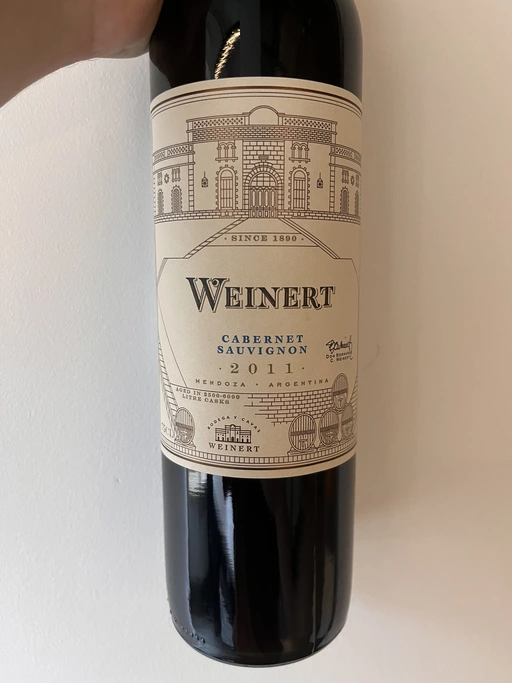

- Type
- Red Still, Dry
- Producer
- Weinert
- Vintage
- 2011
- Location
- Argentina, Mendoza
- Grapes
- Cabernet Sauvignon
- Alcohol
- 14.5
- Sugar
- NA
- Price
- 613 UAH, 626 UAH
- Cellar
- N/A
Producer
It is said that Mr. Raúl de la Mota had a dream of making high quality wine from Malbec grapes in Mendoza. In 1970 Malbec was only on its way to becoming a star in these lands, yet Mr. Raúl de la Mota meets and shares his dream with a Brazilian transportation businessman, Mr. Bernardo C. Weinert. The story is stingy, so I don’t know all the reasons for Mr. Bernardo C. Weinert to agree. But it is known that he fell in love with a 80 years old building in Carrodilla, Luján de Cuyo. So in 1975 they started to reconstruct the building and the winery itself. The first harvest was in 1977 and first release was in 1979.
But what makes this winery interesting for us, plebeians? First of all, it is located in Luján de Cuyo, a high altitude region in Mendoza, located in the foothills of Andeas mountains between 800 m and 1500 m elevation. This terroir enables complex and well structured wines. Secondly, Weinert ages wines in the bottle before releasing them. And it’s easy to get bottles that are 10+ years old. Thirdly, the price tag is good. This combination deserves to be enjoyed.
Ratings
2022-10-03 - 8.00
It’s more lively than Merlot of the same vintage. Beautiful and ripe bouquet: eucalyptus, tobacco, black currant (jaaam), pine nuts, bay leaf, and oak. Round, almost perfectly balanced, long aftertaste with a liquorice finish. Not overly sophisticated, but approachable and delicious.
Related